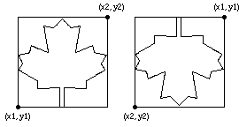

Draw.MapleLeaf (x1, y1, x2, y2, Color : int)
The Draw.MapleLeaf procedure is used to draw a maple leaf on the screen bounded by a rectangle described by the bottom left and top right corners of (x1, y1) to (x2, y2) using the specified Color. If y1 is greater than y2, then the maple leaf is drawn upside down.

This program will draw two maple leaves beside each other. The first will be in red and the second maple leaf will be upside down and in yellow.
View.Set ("graphics")
Draw.MapleLeaf (0, 0, 100, 100, red)
Draw.MapleLeaf (150, 100, 250, 0, yellow)
The Draw.MapleLeaf procedure is useful for drawing the Canadian flag.
The screen must be in a "graphics" mode. See the View.Set procedure for details. If the screen is not in a "graphics" mode, an error will occur.
Exported qualified.
This means that you can only call the function by calling Draw.MapleLeaf, not by calling MapleLeaf.
View.Set, maxx, maxy and the various procedures in the Draw unit.